AC3D Cockpit amma verified reference
Status: ACCEPTED
- Reference screenshots and independently rebuilt GLB agree in front, 30-degree, and profile views.
- The CI master has 99,614 vertices and 198,063 triangles; the 4,435,041 DXF entries are laser points.
- Source crop edges are authoritative; no new person edges are invented.
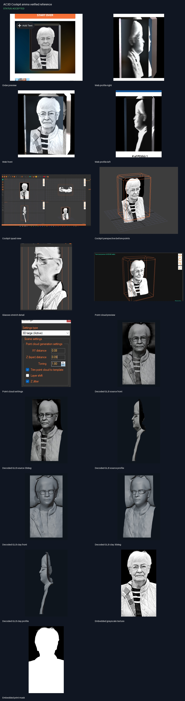
Contact sheet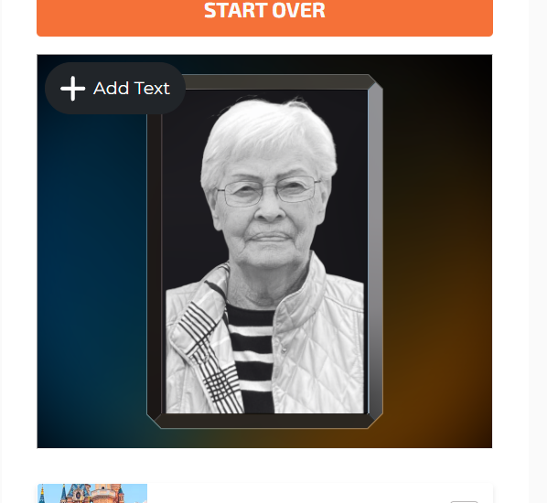
Order preview
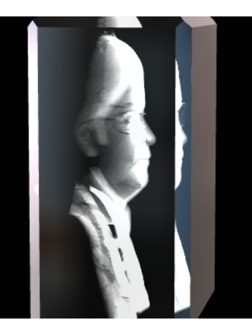
Web profile right
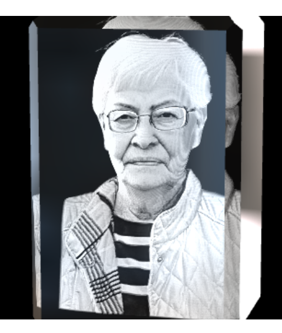
Web front
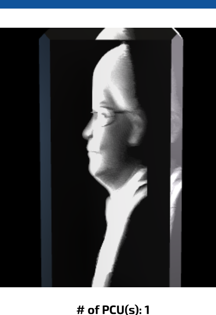
Web profile left
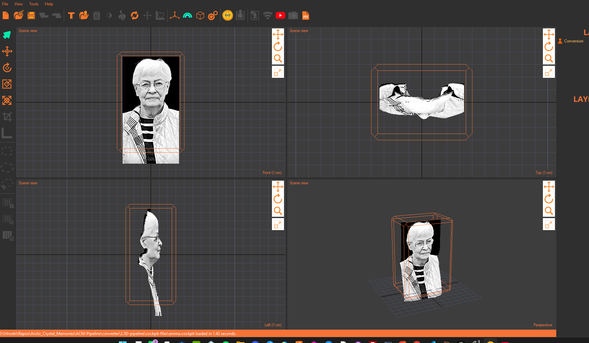
Cockpit quad view
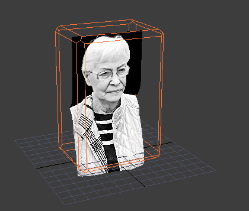
Cockpit perspective before points
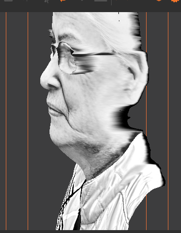
Glasses stretch detail
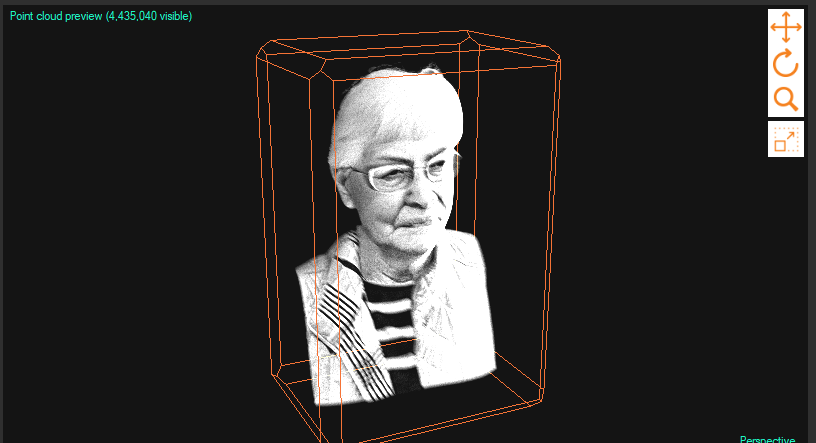
Point cloud preview
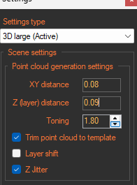
Point cloud settings
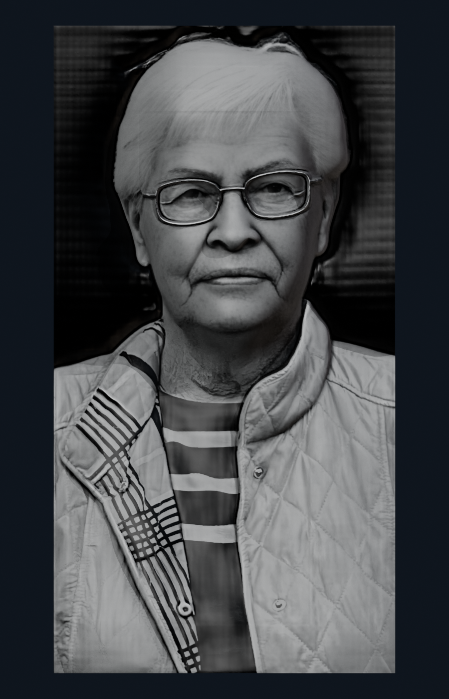
Decoded GLB source front
 Decoded GLB source 30deg
Decoded GLB source 30deg
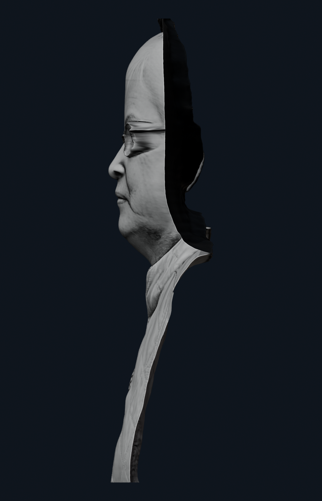
Decoded GLB source profile
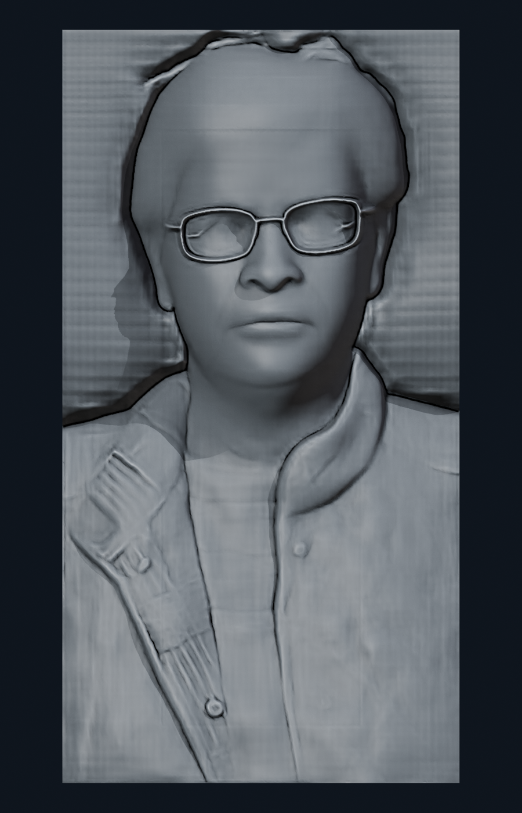
Decoded GLB clay front
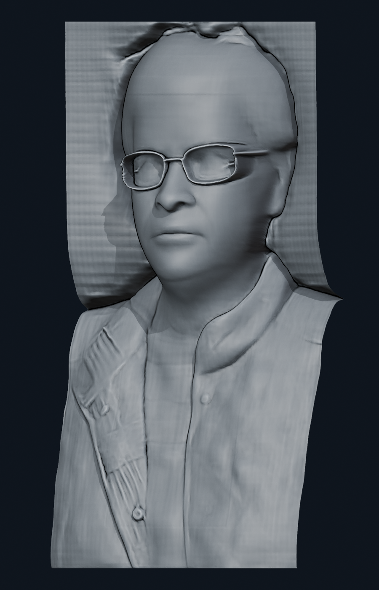
Decoded GLB clay 30deg
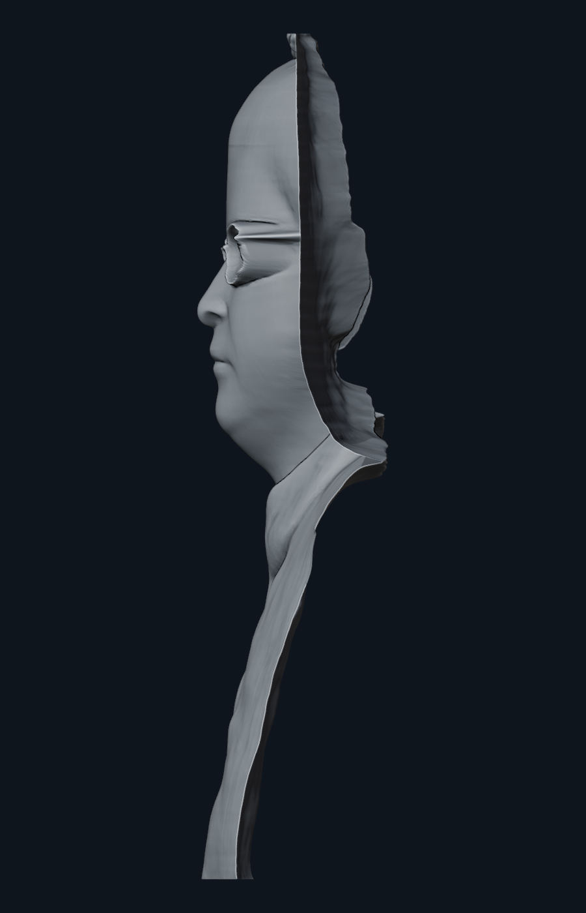
Decoded GLB clay profile
Embedded grayscale texture
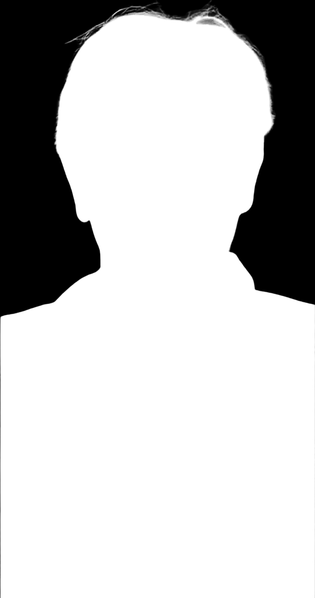
Embedded print mask